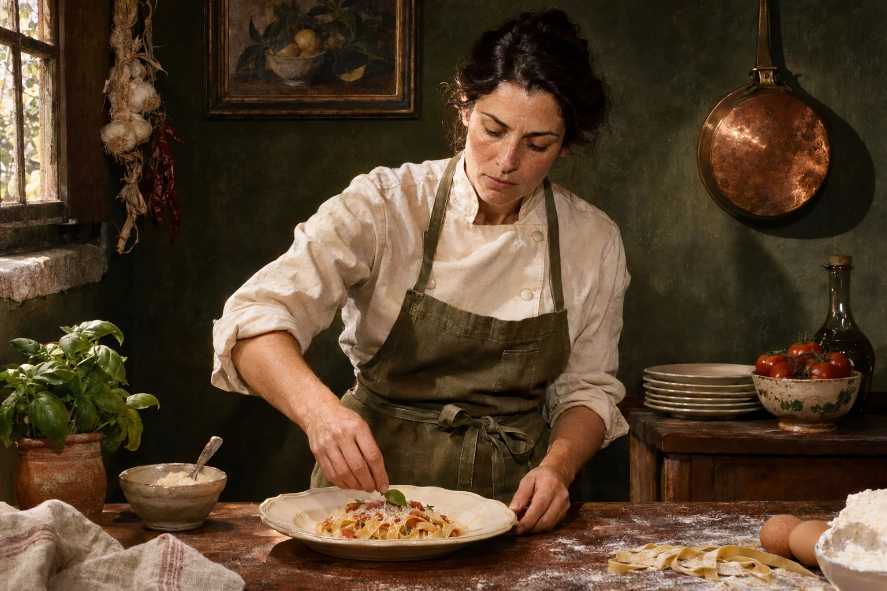
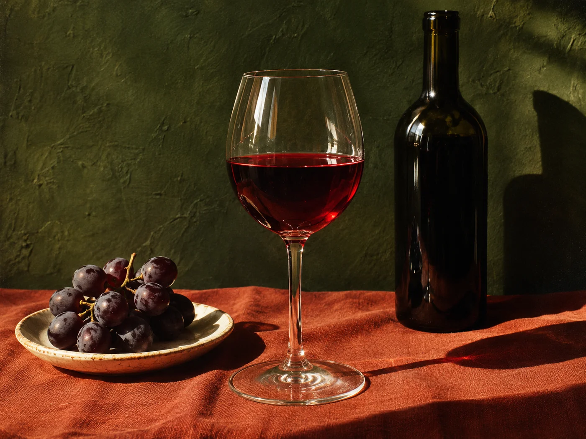
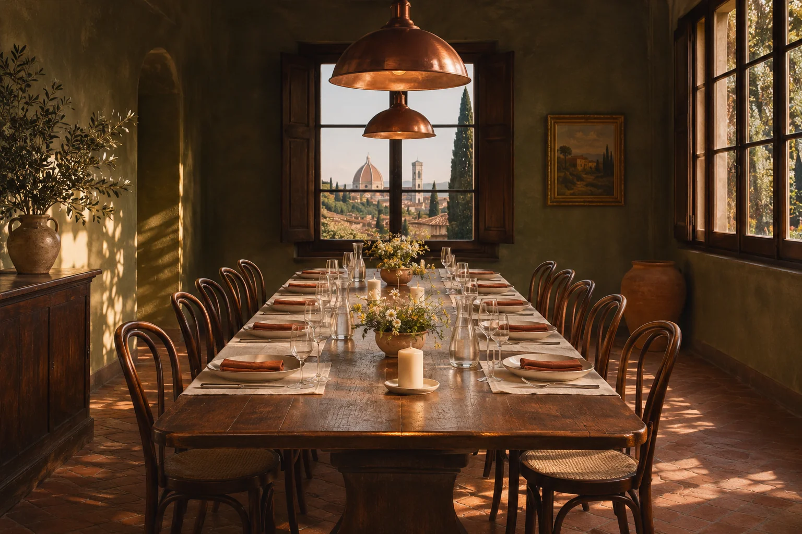

We follow the land
The season suggests the ingredients. The kitchen finds a way to let them shine.
Our story
Oliva is our way of imagining hospitality: an open door, a carefully laid table and time to enjoy being here.

ITALIAN ROOTS. A CURIOUS SPIRIT.
Our imaginary restaurant takes shape in Florence’s Oltrarno. A neighbourhood of workshops, encounters and little rituals: the ideal setting for cooking that starts with the essentials.
In Oliva’s world, the menu follows the harvest and relationships with growers matter as much as recipes. Vegetables at their best, good olive oil, handmade pasta. Quality speaks quietly.
See what’s cookingThe season suggests the ingredients. The kitchen finds a way to let them shine.

Thinly rolled pasta, a slowly simmered stock, bread to share. Care is in the details.

An intimate room, comfortable tables and a welcome that lets you be yourself.

FROM OUR HANDS TO YOUR TABLE
No rush. Choose a dish, ask about the wine, stay for dessert. Everything else can wait.
We’ll save you a seatIt’s in the little things


